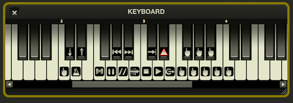

Interface and Editing
Performance vs. Edit Mode
Sinfonia has two basic modes: Performance and Edit. Just like you would expect, Performance Mode is for running the show during rehearsals and performances, and Edit Mode is for making changes to suit your specific production (adding cuts, removing songs, making key changes etc).
You can toggle between the modes in two ways:
- By using the "mode" menu along the top of the screen. Mode-P means you are in Performance Mode, and Mode-E means you are in Edit Mode.
- By toggling the lock icon in the Timeline window. If it is locked, then you are in Performance Mode, if it is unlocked (and highlighted) you are in Edit Mode.
Performance Mode |
Edit Mode |
Please note: while it is possible to play along in Edit Mode, we do not recommend running the show like this! Performance Mode prevents you from accidentally making changes during a show.
Timeline
The Timeline is one of the most important windows in Sinfonia, especially when it comes to easily making large-scale edits.
Because there are many different types of edits that you can make within Sinfonia, the Timeline window selectively shows only edits that are related to the current "active" window. For example, if you select the Navigation window (either by clicking on it or by using the drop-down menu within Timeline) you will be able to see regions of the song that currently have vamps, cuts, repeats, fermatas; basically any edit that you make with the Navigation window.
Here are the types of edits visible, based on the current "active" window. (for detailed information on what various edits do, see the following sections corresponding to the appropriate window.)
| ACTIVE WINDOW | EDITS VISIBLE |
| Hotkeys | hotkey definitions |
| Instrument Mixer | mute settings, volume adjustments |
| Miscellaneous | any edits not covered by other settings |
| Navigation | cuts, vamps, repeats, attaccas, pauses, stops, cutoffs, relseq |
| Songs | transpositions |
| Tempo | tempo adjustments |
Please note, the Timeline window doesn't necessarily tell you exactly what edit is made to a region! It merely tells you that there is an edit there. If you need detailed information on an edit, you should use the Advanced Editor window. (Some edits are color-coded, however. Check under the Preferences menu [CMD-, on Mac and CTRL-, on Windows] to see what they are, or to change the colors).
In Performance Mode
Timeline can be a useful window to have visible during performances or rehearsals. As mentioned above, you can see different types of edits based on the active window. So if you want to see all upcoming vamps, make sure that Navigation is active.
The Timeline also has a playhead cursor which shows you exactly where you are in the song. And if you are in a rehearsal and your choreographer wants to go over the dance break starting at measure 53, simply click on that spot in the timeline. The playhead cursor will relocate and you are ready to go!
In the upper right corner, you can toggle between performance mode and edit mode using the lock icon, and "reset" the song using the circular arrow icon. (This is useful when playing a song with edits that use the "wait" and "times" feature. For example, if you have already played a song through the 2nd ending and want to start from somewhere in the middle and go to the first ending, you would need to click the reset icon.)
You can zoom the view in or out using the icons on the lower left.
Making Edits with Timeline
Clicking on the lock icon in the upper right will toggle between Performance mode and Edit mode. Making fast edits with Timeline is extremely easy and intuitive, and is one of the added features we are most excited about!
There are two basic types of edits you can make: region edits and point edits. Region edits apply to a range of measures (like a vamp), and point edits are single events that happen at a specific spot (like a fermata).
Here is how you would make a sample cut from bar 5 to bar 9 using the Timeline:
- Enter edit mode
- Set the active window to Navigation (and make sure it is visible)
- Click-and-drag the region in Timeline between bar 5 and bar 9. It should now be highlighted, and the fields at the bottom should read: Selection-Start 5, 1, 0 and End 9, 1, 0
- In the Navigation window, click on the top icon (cut)
- Exit edit mode
Voilà! You have just created a cut from the downbeat of measure 5 to the downbeat of measure 9! Take some time to experiment with the other types of navigation edits, and you will see just how powerful the Timeline editor really is.
Deleting an edit is even easier. To remove the cut we just made, simply enter Edit Mode, click on the edit region to select it, and hit Delete.
To make a point edit (such as a fermata at the downbeat of bar 12), the process is almost identical.
- Enter edit mode
- Click on the downbeat of bar 12
- In the Navigation window, click on the fermata icon (pause)
- You should now see a little arrow at bar 12. This shows that a point edit exists there.
- Exit edit mode. Now when you play (using the Go key) the music will automatically pause there!
As you can see, it is extremely easy to customize your show with just a few clicks! There are many different types of edits you can create - for detailed information on all of them, see the corresponding sections below.
Songs
In Performance Mode, the Songs window simply displays the order of music for the show you are running. Most Sinfonia installations only load one act at a time, so you will need to load Act 2 by using the File->Open command for multi-act shows.
You can switch the current song by clicking on the song name, or by using the Previous Song/Next Song buttons within Transport. There is also a MIDI keyboard key to advance to the next song.
Editing in the Songs Window
When you switch to Edit Mode, you can make a number of extremely useful edits within Songs. This includes re-ordering songs, adding reprises, cutting songs, changing keys, etc.
Changing Song Order
To change the order of the songs in your show, simply click-hold and drag on any song name to move it to a different spot in your playlist.
Changing the Key of a Song
Simply click on the name of a song to highlight it, and click-and-hold on the "0" in the upper right corner of Songs. This will display a series of numbers ranging from -12 to +12 corresponding to how many half-steps up or down you would like to move the song.
You will notice when you do this that the Timeline will now show a region edit for Songs that encompasses the entire song. It is also possible to change the key of a section of the song by selecting that region within Timeline and using the half-step selector in Songs to set the transposition. Or if you want a transposition to start at a particular measure and apply to the end of the song, move the playhead cursor to that measure in Timeline and then use the half-step selector.
Cutting (Or Un-Cutting) a Song
To remove a song from the playlist, simply select it in Edit Mode and click the minus icon in the upper left of Songs. Don't worry, this change is not permanent! You can add the song back by clicking on the plus icon and selecting the song from the drop-down menus.
Adding a Reprise
If you want to reprise a song, you can either copy the current song by clicking on the duplicate button or by using the plus icon. Note that if you "duplicate" the song, the new version will retain any edits you have already made (like adjusting the key.)
You can then make cuts (using Timeline and Navigation) and other adjustments to the duplicate and drag the song to its new position.
Renaming a Song
By default, duplicating a song will call it something like <song title>-copy. If you want to call it something else, simply double click on the song in Edit Mode and you can edit the name. Just make sure the song name is unique. You cannot have two identically named songs in the list.
Transport
The transport window should look familiar to anyone who has used a music playback device, and functions very similarly, with a few notable exceptions. All of these buttons are hotmapped to the MIDI keyboard, allowing you an efficient means of navigating the set without having to interact directly with the computer. See the Keyboard section of the manual for specifics.
Many of these buttons can also be activated using the function keys F1-F12, as covered under the Function Legend section of the manual.
Rewind/Previous and Next Song
As expected, these buttons will navigate within the Songs window. If you are in the middle of a song, the "previous" button will first move to the beginning of the song. If you are already at the top of a song, the button will take you to the previous song.
Previous Bar and Next Bar
These buttons move backwards or forwards within the current song by a single measure.
Start, Pause, and Stop

Clicking on the Start button will start the song in go mode at the default tempo without any interaction from the user. (However, Sinfonia® is intended to be played live!)
If you click on the Pause button while music is advancing, it will act as a fermata, and any sounding notes will continue to sound until you continue by either clicking Start, Stop, or hitting the Cut-off key.
The Stop button does exactly that - stops the music.
Exit Vamp
If you enter a vamp when playing a song, you must click on the Exit Vamp button to continue. This can be done with the mouse, by function key (F10 by default) or on the MIDI keyboard.
Keyboard

In performance mode, the Keyboard window provides a useful visual reference for what keys perform what function on your MIDI keyboard. Please note, while it is entirely possible to use Sinfonia without an external keyboard, you will find that playing live feels much more natural with a keyboard attached.
Along the top of the window are numbers showing which octave on the keyboard is displayed. Sinfonia uses the American system of note designations, where C3 = middle C.
Editing the Keyboard
By no means are you restricted to using the default layout on the Keyboard. Each and every function can by re-mapped (or cleared) by entering Edit mode.
You will notice a small drawer open to the right when you enter Edit mode. This allows you to set up a number of unique layouts and switch between them with ease. There are buttons for adding, deleting and duplicating a layout, and a button to reset the current layout to the default setting. If you double-click on a layout, you can re-name it.
To change what is assigned to a key, simple click-and-hold on that particular key. A list of icons will pop up, and you can choose what you would like to assign, or clear the current assignment.
You can assign a range of keys to the same function by using shift-click-and-hold or control-click-and-hold (command on Mac.)
Default Keyboard Icons
Tap
These are your basic go-to keys for performing the show live. Simply "play" the tap keys in the rhythm designated in the score or Rhythm window, and Sinfonia will follow your every move.
Tempo down, tempo up, a tempo
If you are in cruise or play mode, these buttons will adjust the tempo accordingly. The "a tempo" button will set the current tempo to the default program setting, even if you are in cruise mode.
Create vamp, pause, cut-off, exit vamp
The create vamp button can be very useful in a live performance setting. Let's say that an actor misses an entrance, or your set isn't quite in the right spot and you need to "fill time". The create vamp button will create an on-the-fly vamp for you! If you hit it once, it will create a 1-bar vamp. If you hit it twice, it will create a 2-bar vamp and so forth. Keep in mind, this button sets the beginning of the vamp to the current bar.
If you find yourself in a bind and need to jump to a specific measure during a performance, the "Go to..." function can be your friend. For more detail, see the appropriate [hotlink] section in the manual.
Just like in the Transport, hitting the pause key will act like a fermata - sustaining any currently sounding notes. If you want to then stop the sound of the sustained notes, use the cut-off key. It is always better to use the cut-off key instead of the stop key to end a fermata, since hitting stop will cause the program to "forget" live playback tempos used for the cruise function.
Exit vamp functions the same way as in the Transport.
Skip, < skip >, and next song
Just like in the Transport, the skip keys will rewind or fast forward by single bars, and the next song key will advance the playlist.
Stop, start, and cruise
Stop and Start function the same way that they do in Transport. The Cruise key can be a useful tool during performance to set the tempo during a section of music and "letting it go." Simply hit Cruise after setting the tempo with the tap keys, and Sinfonia will continue along in whatever tempo you have set.
MIDI Reset
Similarly to the MIDI Reset button, hitting this key will send an emergency "all notes off" command to Sinfonia.
Additional keyboard icons
The following icons are not set to keys in the default layout, but are still available for you to assign yourself.
Previous song
This key behaves exactly like the previous song button in Transport, rewinding the playlist.
Reset
Similarly to the Reset button in the Timeline, the will reset the internal counters for the current song. Use this if you have played through an edit that uses the "wait" or "times" feature (like a 1st, 2nd ending) and you want to start the song over from the beginning.
Hotkeys (1-36)
Hotkeys can be an extremely useful and powerful tool within Sinfonia, and are covered under more detail in the [hotlink] Advanced Editing section.
Function Legend
You can also perform many of the actions detailed on the Keyboard window using the function keys (F1-F12) on the computer.
| Key | Action |
| F1 | tempo slower |
| F2 | a tempo |
| F3 | tempo faster |
| F4 | cut-off |
| F5 | previous song |
| F6 | stop |
| F7 | pause |
| F8 | go |
| F9 | reset song |
| F10 | exit vamp |
| F11 | create vamp |
| F12 | cruise |
| shift-F1 | MIDI reset (all notes off) |
If you enter edit mode, you can change the default assignments (and assign shift-commands to all the function keys). To do so, simply click-and-hold on the button you would like to edit and a list of possible assignments will appear.
Navigation
The navigation window, together with Timeline, gives you an extremely fast and simple way to make large-scale edits to the songs.
In performance mode, if you have the Navigation window active, then Timeline will show you regions of the song that have edits active in them. But edit mode is where the Navigation window is truly useful.
Editing with Navigation
Cuts, vamps, and repeats
These types of edits require you to select a region within the timeline. Note that you can fine-tune the selection using the fields at the bottom of the Timeline window. The repeat button defaults to repeating the section only once. You can use the "times" field in the Timeline window after making the repeat to change this setting.
Attacca, pause, stop, and cutoff
These are "point" edits. Attacca will immediately jump to the next song in the playlist, pause will create a fermata, and stop will halt automatic playback at that particular spot.
Please note: a pause effectively holds playback before the notes where it is placed. For example, creating a pause edit at the downbeat of bar 12 will cause Sinfonia to hold playback at the very end of bar 11. If you want to create a fermata on a specific chord, you need to place a pause edit on the note or rest that follows the written fermata.
Relseq
Relseq is provided as an alternate way to advance to a different track automatically. When you create a relseq edit at a spot in the Timeline, it will advance to the beginning of the next track and stop playback (if you are in Go or Cruise mode). An attacca edit would continue playback in the next song.
When you are playing Sinfonia live, relseq and attacca function essentially the same way.
Both attacca and relseq can be customized to jump to a different song within the loaded show by using the Advanced Editor. However, if you are making a lot of adjustments to the order of the show, it is recommended that you edit the Songs tracklist to duplicate songs and keep your playlist linear.
Using wait and times
The wait and times features allow you to be a little more specific about exactly when an edit will take place.
Wait tells the program to ignore that edit until a later pass through that spot of music. Times tells the program to perform the edit a specific number of times only.
For example, let's say you have a 16 bar repeat starting at measure 1 that you want to play 3 times total (repeat twice). To do this, create a repeat from measure 1 to measure 17 and set "times" to 2. Sinfonia will now take the repeat twice to play that section 3 times total. On the third repeat the edit will disappear and playback will continue as normal.
Now let's say you have a vamp and want a particular to pause at a particular spot starting on the 3rd vamp. To do this, create the pause edit and set the "wait" value to 2. This tells Sinfonia to ignore the edit for the first two passes.
As you can see, "wait" and "times" can be a little tricky to wrap your head around when programming edits, but understanding them can give you greater flexibility in your editing.
Rhythm
The Rhythm window is one of the most exciting features added to Sinfonia 2. When you are in play mode, it tells you at a glance what particular rhythm you need to play for the current (and surrounding) measure in the music.
Editing tap rhythms
It is when you enter edit mode that the power of the Rhythm window becomes apparent.
The first thing you will notice is a row of additional buttons that appear along the top of the Rhythm window. Using these buttons, you can quickly change the default tap rhythms. If you have ever used a music notation program, then this process will feel very familiar to you.
From left to right, you have buttons to set note duration, a button to tie two notes together, a button to create triplets, a button to beam notes together, and rests of varying lengths.
To change the tap rhythm, you first must delete the existing tap rhythms. To do this, select the rhythms you would like to delete by click-and-drag and then hit the "delete" button. You should now see one or more measures that are highlighted red. These are measures that do not currently have the current number of taps programmed.
To create a rhythm, simply place the blue cursor in the measure where you want edits and click the note buttons to create the desired rhythm. You can also copy and paste existing rhythms by using ctrl-c (command-c on mac) and ctrl-v (command-v on mac).
Sinfonia treats rests in measures differently than notes. If you enter rhythms using rests, then Sinfonia will automatically advance through those beats. Use this if you want to program sections of music with distinct cued hits, or to save yourself from tapping through empty measures.
By default, Sinfonia will not beam notes together. If you want to create beaming patterns, simply select groups of notes that you would like beamed together and push the "beam" button.
Adding ties is a similar process by selecting the note that begins the tie and pressing the button.
To create triplets, first enter all the notes for the triplet, then select the group and press the button.
If you have entered too many (or too few) beats for the current measure, Sinfonia will highlight the measure red and give you an error if you try to leave edit mode. You can either fix the mistake manually or have Sinfonia try to fix the mistake for you.
Tempo
When you are in Performance Mode, the tempo window tells you very quickly:
- What the default tempo is for the current location
- What your current played tempo is
- How much faster or slower the played tempo is compared to the programmed tempo
Editing default tempos
If you enter Edit Mode, the Tempo window allows you to quickly change the default tempos, either by using the percentage slider or by recording a performance of the given section of music.
To edit using the tempo slider, simply click-and-drag the section of music you would like to be faster or slower and move the slider appropriately.
However, you might be able to get a more nuanced performance of the given section of music by recording it yourself!
- Select the spot of music within Timeline where you would like to begin recording.
- Click the triangular button in the Tempo window to "arm" the recording. It will start blinking.
- Begin playing!
- When you are finished, turn off the recording by clicking the triangular button again.
You can even change what note value is used to determine the tempo using the drop down menu to the right of "Current Tempo."
After you have made a tempo edit, a single region will show up in Timeline covering the area where you have made an edit. To revert to the default tempo, simply select the edit in Timeline and delete it, like you would with any other edit.
Markers
Setting markers gives you an alternate and convenient method of navigating to various sections within the current song quickly.
Let's say you have a dance break that the choreographer likes to start rehearsal at frequently. Instead of having to look up the bar number and type that into the keyboard, you can set a marker called "dancebreak" at that particular spot in the music ahead of time.
Then, while you are within that song, you can simply start typing "dancebreak" on the computer and Sinfonia will auto-complete based on the currently active markers. Hit "return" once to arm the jump, and again to jump to that spot in the music. Set up markers in songs you rehearse frequently to simplify and speed up your rehearsal process!
Creating markers is simple. Just enter edit mode, select a spot within the timeline, and then push the "+" button on the markers window. Name the marker something appropriate, and you are set! To delete a marker, select it within the Markers window and push "-".
Markers can also be used as destinations for a hotkey "location" event.
Hotkeys
Hotkeys can be an incredibly powerful tool to give you even more control over the show (especially during a performance). With hotkeys, you can trigger unique relocations, mutings, external sequences and more. For example, you can set up a hotkey to take you instantly to measure 37. Or you can set up a hotkey to trigger the muting (or unmuting) of the flute part.
Because hotkeys are programmed to be valid for a specific range within a song, you can use the same hotkey for different functions during a show. For example, hotkey 1 can be your "jump cut" hotkey in one song, and your "toggle the mute on Trumpet 1" button on another song.
Here are the possible types of hotkeys:
- Location - This will immediately jump to the designated spot within the current song.
- Instrument - This toggles the mute state for a particular instrument. If the instrument is currently muted it will un-mute it and vice-versa.
- Sequence - This will trigger an external sequence (a snippet of music in a different time-signature or a sound cue.)
- Undefine - This "clears" a previously defined hotkey.
"Sequence" hotkeys are rare, and should be pre-programmed for your Sinfonia show. The "Undefine" hotkey is programmed automatically by Sinfonia.
Programming hotkeys
To program Location and Instrument hotkeys, first select (in Edit Mode) the region you would like the hotkey to be active, and then push the "+" button in the Hot Keys window.
If you select a single spot in Timeline, then the hotkey will be active from that spot until the end of the song (or until the hotkey is redefined by subsequent programming). To make a hotkey active for the entire song, simply place the cursor at the beginning of the song before hitting the "+" button.
Use the Number field to set the hotkey number (1-36), and Label to create a helpful name for the hotkey (like "jumpcut" or "muteTpt1"). The Wait and Times fields function in the same way as they do when programming other types of edits.
Location hotkeys
The target field for location hotkeys can be either a bar number within the current song, or a predefined marker.
Instrument hotkeys
When you create an instrument hotkey, the target field will show a list of possible instruments. Pressing this hotkey will toggle the mute state of that particular instrument.
After you program a hotkey, it is helpful to check your hotkey assignments on the MIDI keyboard. A programmed hotkey isn't very useful without a key to trigger it!
Instrument Mixer

The Instrument Mixer is where you will do all your major edits to the individual instrument parts within the show. You can adjust volume, mute settings, pan settings and even adjust what channel each instrument goes to (if you are setting up a more complicated mix).
Each instrument has a channel strip with a volume slider (set to a default of 100%), a panning knob, a channel output selection, and a mute button.
Note that channel strips are assigned per individual instrument, not per "book." If the show calls for Reed 1 to play flute, piccolo, and clarinet, then each of those instruments will be on a separate channel strip. This makes it easier for you to deal with situations where a live player can cover only some of the part assigned.
For convenience, there is a reset button (like the one in Timeline) in the upper right of the Instrument Mixer.
Editing in the instrument mixer
Individual song edits
By using the Instrument Mixer with Timeline, you can make adjustments to the default mix for any given song. These edits function much in the same way as any other edit within Timeline - first make sure you are in edit mode, then either place the cursor at the spot where you would like the edit to begin or select a range of measures for the edit. If you select a single point within the Timeline, then the edit will be active until it either reaches another edit to that parameter, or until the end of the song.
Note that for volume edits, you are essentially applying a percentage multiplier to the pre-programmed mix. So if you set the piccolo slider to 70, it will play at 70% overall volume for that region while still performing any indicated dynamics.
Please note that these edits only apply within the given song. If you want to make all the brass quieter for the entire show, you need to make a global edit.
Global edits
Unlike edits made within songs (like key changes, hotkey settings, cuts, etc), global edits apply to the entire current showfile. This means that you can quickly mute all the brass, or perhaps make the double bass a little bit louder for every song. This is especially useful when you are combining Sinfonia with a group of live players, and don't need certain parts to be played, or perhaps want to double live players quietly to add more body to the pit sound.
Here is how to make a global edit:
First, you must be in Edit Mode. Then, click on the "+" icon in the upper left corner of the Instrument Mixer. You should now see an orange border around the window - this indicates that you can now make global edits. When you first make an adjustment after entering global edit mode, you will get a pop-up warning box.
This is to ensure that you don't make a global edit without meaning to.
At this point, you can make sweeping changes to volume and mute settings for the entire show. If you have made any local general adjustments to that instrument, you will also get this pop-up warning:
You can choose one of two options - you can either erase (overwrite) all local edits for that instrument, or you can retain the local edits on top of the global edit. If you choose the latter, the local and global edits are cumulative. So if you have previously mixed a particular timpani hit to be louder, but then decide to make the timpani quieter for the entire show with a global edit, that local edit will still apply. It won't be as loud as the original edit, but will be louder than the rest of the timpani part.
When you have finished making adjustments, exit global edit mode by clicking on the "+" icon. Note that you are still in general edit mode at this point.
Currently, only volume sliders and mute settings are available for global edits. Pan settings and channel out assignments are by default global, and you don't need to be in global edit mode (or even general edit mode) to make changes.
Instrument channel test
When you enter Edit Mode, you will also notice a series of headphone icons above each channel strip. This will send a series of notes to that instrument, and is used to test the output of that particular channel. This is useful when you are setting up Sinfonia in your rehearsal or performance space, particularly when using a multi-channel mix. For more information, see [link to appropriate technical setup section].
Output Mixer
The output mixer window is used to make adjustments to the level of the entire mix (or sub-mixes) being sent to your sound system, as well as to fine tune reverb settings.
The number of active channel strips will change according to the type of audio interface you are using. Note that each channel strip is stereo, and will correspond to two outputs on your interface. Channel A would be outputs 1 & 2, channel B would be outputs 3 & 4, and so forth.
If you are running Sinfonia® through the headphone output on your computer (which is possible but not recommended for reasons of audio quality) only a single channel strip will be visible.
By default a show will send every instrument to channel A. If you would like to set up a mix where all of the brass are going out a different channel, you would need to change the setting at the bottom of each corresponding strip in the Instrument Mixer. You are only limited by the number of channels on your interface.
Along the right side of the Output Mixer is a single blue fader channel - this is your master volume channel. You usually won't need to make adjustments to this, but if your sound person would like more (or less) sound from Sinfonia® this is a likely place to make that adjustment. Note that this is separate from any volume settings for your audio interface. This channel merely controls the level of sound that the Sinfonia® program sends to the computer. To find out how to adjust the volume for your audio interface, please refer to the manufacturer's manual.
Reverb send and return
The knobs along the bottom of the Output Mixer control the levels of reverb for each channel. In simple terms - "reverb send" controls the amount of signal for that channel that gets sent to the reverb effect, and "reverb return" (the single knob under the master volume) controls the overall amount of reverb in the mix.
Note that the reverb only sounds on a single channel ("A" by default). This is to save on CPU processing power and insure that Sinfonia® performs as well as possible in a live setting. If you would like the reverb to sound on a different channel, you can use the selector menu underneath the "reverb return" knob.
Editing in the Output Mixer
Please note - the volume settings in the Output Mixer are most useful when a particular song needs to be louder or softer overall. It is not possible (nor logical) to make "region edits" to settings in the Output Mixer. The Output Mixer is intended to be a "set it and forget it" window. You can adjust settings per song or for the entire show, and we recommend setting everything to a good basic level in your initial sound setup. Once you finish these large-scale volume edits, any further regional edits to the mix should be done using the Instrument Mixer.
The sliders in the Output Mixer function a little differently than they do in the Instrument Mixer. In performance mode, any adjustments made to channel volumes apply to the current song. This allows you to make quick "on the fly" adjustments to each group of instruments you might have assigned to the various channels. (If you are running a single stereo mix, then any adjustments to mix will need to be done using the Instrument Mixer.)
When you enter Edit Mode in the Output Mixer, a few more options are available to you. You will notice a pop-out drawer is now visible on the right side of the window. These settings control the type of reverb used by Sinfonia. You can choose between Stereo vs Mono, Bright vs Dull, and Long vs Short. Again, adjustments made to these settings in Edit Mode apply only to the current song. If you want to adjust reverb settings for the entire show, you will need to do so using global edits.
Global edits in the Output Mixer
You can also make global edits using the Output Mixer. To do so, first enter Edit Mode and then click on the "Global Edit" button (the "+" in the upper left corner). You can now adjust channel volume settings and reverb "color" settings for the entire show. Reverb send and receive settings are global by default, and are not intended to be changed from song to song.
Channel test
When you are in Edit Mode, a series of buttons with headphone icons appears about each channel. Toggling these buttons will send a sine wave test sound to that channel. For more information, please see [link - Output Test].